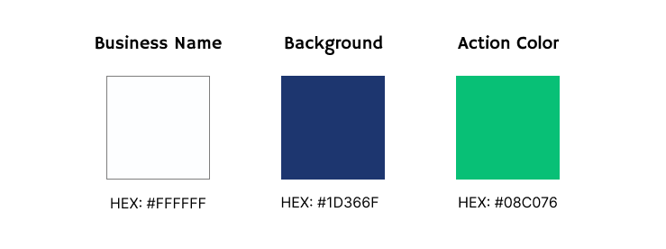
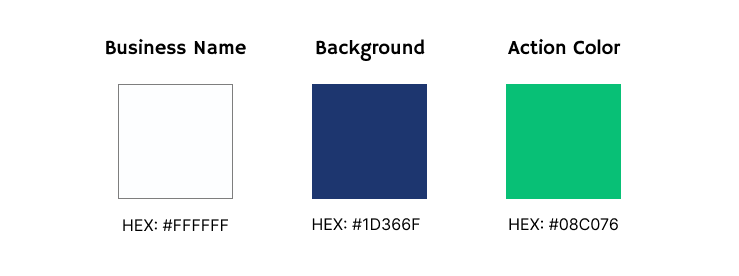

COLOR SCHEME
The colors in Campinas Chamber’s website follows the following scheme:
TYPOGRAPHY
The site’s typography uses the Hammersmith One font for titles and navigation items, and the Inter font for texts.
The colors in Campinas Chamber’s website follows the following scheme:
The site’s typography uses the Hammersmith One font for titles and navigation items, and the Inter font for texts.